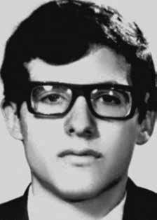

Alexandre
Vannucchi
Leme
BIOGRAFIA
Alexandre Vannucchi Leme era estudante de Geologia da Universidade de São Paulo (USP), primeiro colocado no vestibular, e militante da Ação Libertadora Nacional (ALN), quando foi assassinado. Conhecido pelos amigos pelo apelido de “Minhoca”, o jovem estava tentando reorganizar o Diretório Central dos Estudantes (DCE) da USP, o que era ilegal na época. Tinha apenas 22 anos quando foi preso pelo DOI-CODI, em São Paulo, em 1973.
No dia seguinte à prisão, após ter sido submetido a sessões de tortura, foi encontrado morto numa das celas desse órgão da repressão. O Estado brasileiro divulgou duas versões para a morte de Vannucchi: que ele teria sido atropelado por um caminhão, e que teria se jogado na frente do veículo, numa atitude suicida. Em seu atestado de óbito, consta que ele morreu em decorrência de “lesão traumática crânio-encefálica”, decorrente do suposto atropelamento.
Dois dias depois que sua morte se tornou pública, seus pais souberam que o filho tinha sido sepultado como indigente no Cemitério de Perus, em São Paulo, numa cova comum. O corpo do jovem tinha sido coberto de cal para esconder as marcas das torturas que ele havia sofrido.
Sua morte teve uma grande repercussão, não apenas entre seus colegas, como também em toda a sociedade brasileira. O Conselho de Centros Acadêmicos declarou luto na USP e os alunos pressionaram o reitor Miguel Reale para que interviesse no caso. Ele solicitou informações sobre a morte de Alexandre, enviando um ofício à Secretaria de Segurança Pública do Estado. A resposta concedida não alterou em nada as informações que tinham sido divulgadas na imprensa, apenas reiterou a versão do atropelamento.
Cerca de 5 mil pessoas foram à missa celebrada em sua intenção na Catedral da Sé, pelo arcebispo de São Paulo Dom Paulo Evaristo Arns, no dia 30 de março de 1973, entre estudantes, artistas, autoridades, sindicatos e militantes contra a ditadura.
Foi justamente o sentimento de revolta contra o brutal assassinato do colega, somado à prisão de 44 alunos da USP, o que impulsionou o ressurgimento do movimento estudantil brasileiro. O cantor e compositor Gilberto Gil, chamado para denunciar essas prisões, fez um show na Escola Politécnica da USP, em que falou sobre política, movimento estudantil, arte engajada, imperialismo estadunidense, entre outros assuntos. O show, que devia durar apenas meia hora, teve mais de três horas, um gesto de desobediência civil, num dos momentos mais tensos da ditadura militar.
Em março de 1976, o DCE-Livre da USP finalmente foi criado, em assembleia, e batizado com o nome de Alexandre Vannucchi Leme.
Alexandre Vannucchi Leme was a Geology student at the University of São Paulo (USP), placed first in the entrance exam, and a member of Ação Libertadora Nacional (ALN), when he was murdered. Known by his friends as “Minhoca”, the young man was trying to reorganize USP's Central Student Directory (DCE), which was illegal at the time. He was only 22 years old when he was arrested by DOI-CODI, in São Paulo, in 1973.
The day after his arrest, after being subjected to torture sessions, he was found dead in one of the cells of that repressive body. The Brazilian State released two versions of Vannucchi's death: that he had been run over by a truck, and that he had thrown himself in front of the vehicle, in a suicidal attitude. His death certificate states that he died as a result of a “traumatic brain injury” resulting from the alleged run-over.
Two days after his death became public, his parents learned that their son had been buried as a pauper in the Perus Cemetery, in São Paulo, in a common grave. The young man's body had been covered in lime to hide the marks of the torture he had suffered.
His death had a great repercussion, not only among his colleagues, but also throughout Brazilian society. The Council of Academic Centers declared mourning at USP and students pressured Dean Miguel Reale to intervene in the case. He requested information about Alexandre's death, sending a letter to the State Public Security Secretariat. The response given did not alter in any way the information that had been published in the press, it only reiterated the version of the accident.
Around 5 thousand people went to the mass celebrated in his intention at the Sé Cathedral, by the Archbishop of São Paulo Dom Paulo Evaristo Arns, on March 30, 1973, including students, artists, authorities, unions and activists against the dictatorship.
It was precisely the feeling of revolt against the brutal murder of a colleague, combined with the arrest of 44 USP students, that drove the resurgence of the Brazilian student movement. Singer and composer Gilberto Gil, called to denounce these arrests, performed at the Escola Politécnica da USP, in which he spoke about politics, the student movement, engaged art, American imperialism, among other topics. The show, which was supposed to last just half an hour, lasted more than three hours, a gesture of civil disobedience, in one of the most tense moments of the military dictatorship.
In March 1976, USP's DCE-Livre was finally created, in an assembly, and named after Alexandre Vannucchi Leme.
Alexandre Vannucchi Leme era estudiante de Geología en la Universidad de São Paulo (USP), primer clasificado en el examen de ingreso, y miembro de la Asociación Libertadora Nacional (ALN), cuando fue asesinado. Conocido por sus amigos como “Minhoca”, el joven intentaba reorganizar el Directorio Central de Estudiantes (DCE) de la USP, que en aquella época era ilegal. Tenía sólo 22 años cuando fue detenido por el DOI-CODI, en São Paulo, en 1973.
Al día siguiente de su detención, tras ser sometido a sesiones de tortura, fue encontrado muerto en una de las celdas de ese organismo represivo. El Estado brasileño difundió dos versiones sobre la muerte de Vannucchi: que había sido atropellado por un camión, y que se había arrojado delante del vehículo, en actitud suicida. Su certificado de defunción establece que falleció a consecuencia de una “lesión cerebral traumática” derivada del presunto atropello.
Dos días después de que se hiciera pública su muerte, sus padres supieron que su hijo había sido enterrado como indigente en el Cementerio de Perus, en São Paulo, en una fosa común. El cuerpo del joven había sido cubierto de cal para ocultar las marcas de las torturas que había sufrido.
Su muerte tuvo una gran repercusión, no sólo entre sus compañeros, sino también en toda la sociedad brasileña. El Consejo de Centros Académicos declaró luto en la USP y los estudiantes presionaron al rector Miguel Reale para que interviniera en el caso. Solicitó información sobre la muerte de Alexandre, enviando una carta a la Secretaría de Seguridad Pública del Estado. La respuesta dada no alteró en nada la información publicada en la prensa, sólo reiteró la versión del accidente.
Alrededor de 5 mil personas acudieron a la misa celebrada en su intención en la Catedral de la Sé, por el Arzobispo de São Paulo Dom Paulo Evaristo Arns, el 30 de marzo de 1973, entre estudiantes, artistas, autoridades, sindicatos y activistas contra la dictadura.
Fue precisamente el sentimiento de rebelión contra el brutal asesinato de un colega, combinado con el arresto de 44 estudiantes de la USP, lo que impulsó el resurgimiento del movimiento estudiantil brasileño. El cantante y compositor Gilberto Gil, llamado a denunciar estas detenciones, actuó en la Escola Politécnica da USP, en la que habló sobre política, movimiento estudiantil, arte comprometido, imperialismo americano, entre otros temas. El espectáculo, que debía durar apenas media hora, se prolongó más de tres horas, un gesto de desobediencia civil, en uno de los momentos más tensos de la dictadura militar.
En marzo de 1976, finalmente se creó, en asamblea, la DCE-Livre de la USP, que lleva el nombre de Alexandre Vannucchi Leme.
CIRCUNSTÂNCIAS DA MORTE
Alexandre foi preso em 16 de março de 1973 por uma equipe de busca e apreensão do DOI-CODI/SP, conforme atesta relatório de Informações PB 024/75, da Agência Central do SNI, de 9 de junho de 1975. Sua prisão ocorreu no marco de um inquérito policial instaurado nesse órgão “para apurar as atividades subversivas da ALN, nesta capital, no qual se envolve Alexandre Vannucchi Leme”, segundo consta do Ofício nº 503/73-GD, do DOPS. No dia seguinte à sua prisão, Alexandre teria morrido em decorrência das feridas causadas por atropelamento de um caminhão. A notícia foi publicada nos jornais A Gazeta e Jornal da Tarde, em 23 de março de 1973, seis dias depois de ocorrido o suposto acidente. Essa divulgação tardia da morte foi justificada pela Informação nº 098896/73 do SNI, Agência de São Paulo, de 2 de abril de 1973, que indica que dessa forma se buscava “não prejudicar as diligências em andamento”. A nota foi publicada outra vez pelo jornal O Globo, em 1º de abril de 1973, e informava que Alexandre fora preso em 16 de março “por pertencer a uma organização subversiva autodenominada Ação Libertadora Nacional”. Segundo a nota, assinada pelo general Sérvulo Mota Lima, secretário de Segurança Pública, ao ser interrogado, Alexandre teria negado sua militância e se recusado a informar sua condição de estudante, assim como seu endereço. A publicação acrescentava que o militante havia denunciado seus companheiros e permitido assim a prisão de vários deles, que integravam uma célula estudantil na USP. Esses estudantes teriam confirmado “sua participação e suas ligações com Alexandre, que foi o elemento que os aliciou para o terrorismo”. Em 17 de março, Alexandre teria declarado um encontro, às 11 horas, com um companheiro no cruzamento das ruas Bresser com Celso Garcia, no Brás. Levado para o local, Alexandre teria entrado em um bar, enquanto os agentes aguardavam à distância. Depois de beber, o militante teria saído “em desabalada carreira, aproveitando-se de que o semáforo, recém-aberto, ainda permitia uma passagem arriscada”, momento em que teria sido atingido por um caminhão Mercedes Benz, dirigido por João Cascov, o que causou sua morte. A nota ainda listava as ações das que havia participado Alexandre, mas seus familiares puderam comprovar que na data e hora de uma dessa supostas ações, Alexandre estava anestesiado devido a uma cirurgia de apendicite. Apesar de a morte ter, supostamente, ocorrido em lugar público, declararam apenas quatro testemunhas: o motorista do caminhão, João Cascov; o garçom Alcino Nogueira de Souza, o engraxate André Cortes e Josué Sales Bitencourt. O primeiro testificou no DOI-CODI/SP, em 20 de março de 1973, que Alexandre era perseguido por uma multidão que gritava “pega ladrão!”, quando tropeçou e caiu em frente ao seu caminhão que se encontrava parado. Receoso da multidão, teria arrancado o veículo, mas no mesmo dia mudou seu depoimento e acrescentou que Vannucchi foi alcançado pelos policiais na queda. A segunda testemunha, Alcino Nogueira, declarou que Alexandre bebia cerveja quando de repente começou a correr. André Cortes, o engraxate com ponto na rua Bresser com a Av. Celso Garcia, declarou, em 22 de março, que tinha defeito de audição e não ouviu barulho de freada quando um indivíduo “estonteado” caiu sobre ele “e foi agarrado por dois outros indivíduos, que o levaram do local”. Em 20 de março, a família de Alexandre soube de sua prisão no DOPS/SP por um telefonema anônimo. Seu pai, José de Oliveira Leme, viajou para São Paulo e se dirigiu àquele órgão, onde foi informado de que não havia nenhum registro com esse nome. Indicaram que podia procurar informações no DEIC e no Degran, mas também não conseguiu nenhuma confirmação sobre a prisão de seu filho. Voltou para Sorocaba e em 23 de março retornou a São Paulo. No ônibus leu a notícia sobre a morte de Alexandre no jornal Folha de S. Paulo e dirigiu-se para o IML/SP. Nesse lugar foi informado de que já tinha sido enterrado como indigente no cemitério Dom Bosco de Perus e de que poderia obter certificado de óbito no DOPS/SP, o que só aconteceu em 26 de março. Embora existisse uma versão para a morte de Alexandre, seu pai recebeu informações contraditórias dos delegados Sérgio Paranhos Fleury, que confirmou o atropelamento, e Edsel Magnotti, que afirmou que ele havia se suicidado. As reais circunstâncias de morte de Alexandre foram esclarecidas pelos depoimentos de nove presos políticos na 1ª Auditoria Militar, em julho de 1973: Luís Vergatti, César Roman dos Anjos Carneiro, Leopoldina Brás Duarte, Carlos Vítor Alves Delamônica, Walkíria Afonso Costa, Roberto Ribeiro Martins, José Augusto Pereira, Luís Basílio Rossi e Neide Richopo. Segundo essas declarações, Alexandre foi torturado nos dias 16 e 17 de março por duas equipes do DOI-CODI/SP. A Equipe C, composta por Lourival Gaeta, o PM Mário, o investigador de polícia “Oberdan”, o carcereiro “Marechal”, e chefiada por “Dr. Jorge”, foi responsável pela tortura de Alexandre no dia 16. A Equipe A, composta por João Alfredo de Castro Pereira (“Dr. José” ou “Alemão”), “Dr. Tomé”, “Dr. Jacó”, “Rubens” e “Silva”, seviciou o estudante no dia seguinte. Ao meio dia de 17 de março, Alexandre foi jogado na cela-forte e por volta das 17h00, o carcereiro foi buscá-lo para uma nova sessão, quando descobriu que estava morto. As celas próximas àquela ocupada pelo militante foram evacuadas e o corpo ensanguentado, retirado. Os policiais informaram aos presos que Alexandre teria se suicidado com lâmina de barbear. Essas declarações também constam do Requerimento de Apuração dos Fatos feito pelo ministro do Supremo Tribunal Militar, Rodrigo Octávio Jordão Ramos, em 26 de abril de 1978 (apelação nº 40.192), que não foi aprovado pelos outros membros da corte. Segundo declaração de José Augusto Pereira: […] Ouvi durante o dia e à noite gritos de tortura […]. Num desses dias em que eu prestava declarações foi torturado, durante dois dias o Alexandre Vannucchi, estudante, e no final desses dois dias mandaram que a gente fosse para o fundo da cela para que não víssemos um preso que iria ser retirado de uma cela vizinha. Depois de retirado esse preso, vi os soldados lavando a cela e insinuavam que ele havia se suicidado com gilete, o que não creio, pois toda vez que nos era dada gilete para fazer a barba era imediatamente devolvida […]. Cristina Moraes de Almeida, presa no DOI-CODI/SP nos mesmos dias que Alexandre, relatou em depoimento colhido pela CNV em 4 de dezembro de 2013, em Nova Iorque, local em que reside, que em 16 de março, ele já não reagia mais quando ele desceu […] O Alexandre. Ele desceu. Ele não tinha mobilidade. Ele estava sentado. […] Eu vou para uma cela. Eu estava passando por um interrogatório por outro delegado. Que ele disse que se apresentou como juiz, mas era outro delegado que estava com o Fleury. Que eu não sei quem era. Eu os vejo tentando levar o Alexandre. Eu tinha passado por outra sala, no outro prédio. Você via a saída de quem passava por ali naquele prédio. […] No DOI-CODI. Em depoimento prestado à CNV em 21 de novembro de 2012, Marival Chaves Dias do Canto, ex-servidor do DOI-CODI/II Exército na época em que Vannucchi esteve preso, admitiu que ele foi morto nas dependências daquele órgão. Ao ser questionado se foi suicídio ou suposto suicídio, Marival respondeu: Suposto suicídio. […] O Vannucchi, a história que contam no DOI é que ele foi levado para a enfermaria, para fazer um curativo, se apossou de uma gilete e cortou o pulso, essa é a versão, mas isso não é verdadeiro. Essas pessoas morreram todas no pau de arara, todas sob interrogatório. Na carta de 23 de outubro de 1975, redigida por presos políticos do presídio do Barro Branco, São Paulo, ao então presidente do Conselho Federal da Ordem dos Advogados do Brasil, Caio Mário da Silva Pereira, denunciando torturas, mortes e desaparecimentos de presos políticos de 1969 a 1975, e indicando nomes e codinomes de 233 agentes da repressão, há a seguinte descrição: […] Dias depois, os torturadores exibiram a esses presos políticos [do DOICODI/II Exército] um jornal que noticiava a morte de Alexandre, “atropelado por caminhão” no bairro Brás, durante um suposto encontro com companheiros. O torturador Gaeta (“Mangabeira”) disse: “Nós damos a versão que queremos! Nesta joça mandamos nós!” Esses fatos acham-se denunciados em processo aforado na 1ª Auditoria da 2ª CJM de SP e julgado em 12/03/1975. A requisição de exame indica que o corpo de Alexandre foi encontrado às 17h00 de 17 de março de 1973, na rua Bresser, o que corrobora a versão divulgada pelos órgãos de repressão. Nesse documento há a solicitação para que o laudo seja remetido para o DOPS. Também a entrada do corpo no IML e a certidão de óbito atestam que Alexandre morreu em 17 de março de 1973. O laudo de exame de corpo de delito, assinado pelos médicos Isaac Abramovitc e Orlando Brandão, tem a data de 22 de março de 1973, enquanto o documento de encaminhamento para o cemitério de Perus é de 19 de março de 1971. Apesar de em toda a documentação de morte constar os dados de Alexandre, ele foi enterrado no cemitério Dom Bosco de Perus como indigente, sem caixão, em uma cova rasa forrada de cal virgem com o objetivo de acelerar o processo de decomposição do corpo. Neide Richopo, em depoimento ao jornal Folha de S.Paulo, de 27 de abril de 1978, atestou a morte de Alexandre no DOI: Além de ser torturada e de assistir torturas em outras pessoas, presenciou também o assassinato de um rapazinho no DOI, chamado Alexandre; que se ouviam os gritos de tortura de Alexandre durante dois dias e que, no segundo dia, ele foi arrastado, já morto, da cela onde ele se encontrava, e depois disso, os interrogadores apresentaram, pelo menos, três versões sobre a morte dele como sendo suicídio, sendo que a versão oficial é totalmente diferente das três anteriores, pois era a de que ele havia sido atropelado; que jamais poderia ser atropelado porque já estava morto quando saiu do DOI. Que tudo o que disse com referência à morte de Alexandre é porque encara isso como meio de coação psicológica. Se a interroganda não assinasse o seu depoimento, poderia acontecer com ela o mesmo que aconteceu com Alexandre. A família de Alexandre iniciou processo judicial de requerimento da exumação do corpo de Alexandre e solicitou um promotor público para acompanhar o Inquérito Policial aberto pelo DOPS/SP na 2ª Auditoria Militar, mas o processo foi arquivado pelo juiz Nelson da Silva Machado Guimarães. O assassinato de Alexandre causou revolta entre os estudantes da USP e na Igreja Católica, que se mobilizaram para realizar ações de protesto e homenagem ao companheiro. Os estudantes formaram uma comissão para apurar as circunstâncias de morte de Alexandre e da prisão de outros companheiros, decretaram luto e organizaram uma paralização simbólica com as demais faculdades da USP. Também anunciaram a realização de uma missa de 7º dia, que foi celebrada em 30 de março de 1973, na Catedral da Sé, pelo cardeal-arcebispo de São Paulo, D. Paulo Evaristo Arns, e o bispo de Sorocaba, D. José Melhado Campos. Apesar de as forças de segurança terem tomado o centro da cidade, mais de três mil pessoas conseguiram se reunir no ato religioso. Durante a liturgia, o compositor Sérgio Ricardo interpretou a canção “Calabouço”, que refere o assassinato de Edson Luís, ocorrido no Rio de Janeiro em 1968. A censura impediu que as manifestações pela morte de Alexandre fossem publicadas na imprensa, mas a partir delas o movimento estudantil iniciou sua reorganização. Em maio de 1973, Gilberto Gil, que acabava de voltar de seu exílio em Londres, foi convidado pelos estudantes a realizar um show em homenagem a Alexandre Vannucchi e de denúncia das prisões de 50 estudantes ocorridas dias antes. O encontro ficou marcado para o sábado, 26 de maio, na Escola Politécnica da USP. Gil, que deveria ficar apenas meia hora no evento, cantou e falou com a plateia durante três horas. Dias antes, em um show com Chico Buarque, a censura tinha cortado o áudio enquanto cantavam a música “Cálice”. Em resposta aos protestos, o general Sérvulo Mota Lima, já havia publicado em 1º de abril nota com a versão sobre a morte do estudante, mas nessa oportunidade acrescentou que o endereço de Alexandre não constava da documentação que portava, e que as investigações realizadas não tinham levado à sua residência. Como o corpo não fora reclamado 24 horas após a morte, havia sido enterrado. Os restos mortais de Alexandre foram trasladados dez anos depois de ocorrida a morte e em 24 de março de 1983 foi realizada uma missa na Igreja dos Dominicanos, em Perdizes, em memória de frei Tito de Alencar Lima, que se suicidou na França em decorrência de sequelas de tortura, e de Alexandre Vannucchi Leme. A morte de Alexandre foi relatada em diversos livros como Meu filho Alexandre Vannucchi de Egle Vannucchi Leme e José de Oliveira Leme; Alexandre Vannucchi Leme. Jovem, estudante, morto pela ditadura de Aldo Vannucchi, seu tio; e Cale-se, de Caio Túlio Costa. Em 12 de dezembro de 2013, a 2ª Vara de Registros Públicos do Tribunal de Justiça de São Paulo determinou, em sentença proferida pela juíza Renata Mota Maciel Madeira, a retificação da causa de morte de Alexandre Vannucchi Leme. O pedido tinha sido feito pela CNV em 8 de outubro de 2013, assinado pelo então coordenador José Carlos Dias, após requerimento feito pelos irmãos do estudante assassinado. De acordo com a decisão da magistrada, na certidão de óbito de Alexandre devia constar que sua morte decorreu de lesões provocadas por tortura.
Alexandre was arrested on March 16, 1973 by a search and seizure team from DOI-CODI/SP, as evidenced by Information Report PB 024/75, from the SNI Central Agency, dated June 9, 1975. His arrest took place within the framework of a police investigation opened by that body “to investigate the subversive activities of the ALN, in this capital, in which Alexandre Vannucchi Leme is involved”, as stated in Official Letter no. 503/73-GD, from DOPS. The day after his arrest, Alexandre died from injuries caused by being run over by a truck. The news was published in the newspapers A Gazeta and Jornal da Tarde, on March 23, 1973, six days after the alleged accident occurred. This late disclosure of the death was justified by Information No. 098896/73 from the SNI, São Paulo Agency, dated April 2, 1973, which indicates that the aim was “not to harm ongoing investigations”. The note was published again by the newspaper O Globo, on April 1, 1973, and reported that Alexandre had been arrested on March 16 “for belonging to a subversive organization called Ação Libertadora Nacional”. According to the note, signed by General Sérvulo Mota Lima, Secretary of Public Security, when questioned, Alexandre denied his activism and refused to inform his status as a student, as well as his address. The publication added that the activist had denounced his companions and thus allowed the arrest of several of them, who were part of a student cell at USP. These students would have confirmed “their participation and their links with Alexandre, who was the element that enticed them into terrorism”. On March 17, Alexandre allegedly declared a meeting, at 11 am, with a companion at the intersection of Bresser and Celso Garcia streets, in Brás. Taken to the location, Alexandre would have entered a bar, while agents waited at a distance. After drinking, the activist would have left “in a reckless rush, taking advantage of the fact that the traffic light, which had recently opened, still allowed a risky passage”, at which point he would have been hit by a Mercedes Benz truck, driven by João Cascov, which caused his death. The note still listed the actions in which Alexandre had participated, but his family members were able to prove that on the date and time of one of these alleged actions, Alexandre was anesthetized due to an appendicitis surgery. Although the death supposedly occurred in a public place, only four witnesses testified: the truck driver, João Cascov; the waiter Alcino Nogueira de Souza, the shoeshine boy André Cortes and Josué Sales Bitencourt. The first testified at DOI-CODI/SP, on March 20, 1973, that Alexandre was chased by a crowd shouting “catch the thief!”, when he tripped and fell in front of his truck, which was stopped. Afraid of the crowd, he allegedly started the vehicle, but on the same day he changed his statement and added that Vannucchi was caught by the police when he fell. The second witness, Alcino Nogueira, stated that Alexandre was drinking beer when he suddenly started running. André Cortes, the shoe shiner on Rua Bresser and Av. Celso Garcia, declared, on March 22, that he had a hearing defect and did not hear the sound of braking when a “dazed” individual fell on top of him “and was grabbed by two other individuals, who took him away from the scene.” On March 20, Alexandre's family learned of his arrest at DOPS/SP through an anonymous phone call. His father, José de Oliveira Leme, traveled to São Paulo and went to that agency, where he was informed that there was no record with that name. They indicated that he could look for information at DEIC and Degran, but he was also unable to get any confirmation about his son's arrest. He returned to Sorocaba and on March 23 returned to São Paulo. On the bus, he read the news about Alexandre's death in the Folha de S. Paulo newspaper and headed to IML/SP. There he was informed that he had already been buried as a pauper in the Dom Bosco de Perus cemetery and that he could obtain a death certificate from the DOPS/SP, which only happened on March 26th. Although there was a version of Alexandre's death, his father received contradictory information from delegates Sérgio Paranhos Fleury, who confirmed the accident, and Edsel Magnotti, who stated that he had committed suicide. The real circumstances of Alexandre's death were clarified by the testimonies of nine political prisoners in the 1st Military Audit, in July 1973: Luís Vergatti, César Roman dos Anjos Carneiro, Leopoldina Brás Duarte, Carlos Vítor Alves Delamônica, Walkíria Afonso Costa, Roberto Ribeiro Martins, José Augusto Pereira, Luís Basílio Rossi and Neide Richopo. According to these statements, Alexandre was tortured on March 16 and 17 by two teams from DOI-CODI/SP. Team C, composed of Lourival Gaeta, PM Mário, police investigator “Oberdan”, jailer “Marechal”, and headed by “Dr. Jorge”, was responsible for the torture of Alexandre on the 16th. Team A, composed of João Alfredo de Castro Pereira (“Dr. José” or “Alemão”), “Dr. Tomé”, “Dr. Jacó”, “Rubens” and “Silva”, raped the student in the next day. At noon on March 17, Alexandre was thrown into the strong cell and at around 5 pm, the jailer went to get him for a new session, when he discovered that he was dead. The cells next to the one occupied by the militant were evacuated and the bloodied body was removed. The police informed the prisoners that Alexandre had committed suicide with a razor blade. These statements also appear in the Request for Investigation of Facts made by the minister of the Supreme Military Court, Rodrigo Octávio Jordão Ramos, on April 26, 1978 (appeal no. 40,192), which was not approved by the other members of the court. According to a statement by José Augusto Pereira: […] I heard screams of torture during the day and at night […]. On one of those days when I was giving statements, Alexandre Vannucchi, a student, was tortured for two days, and at the end of those two days they told us to go to the back of the cell so that we wouldn't see a prisoner who was going to be taken from a neighboring cell. After this prisoner was removed, I saw the soldiers washing the cell and they insinuated that he had committed suicide with a razor, which I don't believe, because every time we were given a razor to shave, it was immediately returned [...]. Cristina Moraes de Almeida, arrested at DOI-CODI/SP on the same days as Alexandre, reported in a statement collected by the CNV on December 4, 2013, in New York, where she lives, that on March 16, he no longer reacted when he came down […] Alexandre. He went down. He had no mobility. He was sitting. […] I'm going to a cell. I was being interrogated by another deputy. He said he introduced himself as a judge, but it was another delegate who was with Fleury. That I don't know who it was. I see them trying to take Alexandre. I had passed through another room, in the other building. You could see the exit of whoever passed by in that building. […] At DOI-CODI. In a statement given to the CNV on November 21, 2012, Marival Chaves Dias do Canto, a former DOI-CODI/II Army employee at the time Vannucchi was arrested, admitted that he was killed on that agency's premises. When asked if it was suicide or supposed suicide, Marival replied: Supposed suicide. […] Vannucchi, the story they tell in the DOI is that he was taken to the infirmary, to get a bandage, he got hold of a razor and cut his wrist, that's the version, but that's not true. These people all died in pau de arara, all under interrogation. In the letter dated October 23, 1975, written by political prisoners from the Barro Branco prison, São Paulo, to the then president of the Federal Council of the Brazilian Bar Association, Caio Mário da Silva Pereira, denouncing torture, deaths and disappearances of political prisoners from 1969 to 1975, and indicating names and codenames of 233 agents of repression, there is the following description: […] Days later, the torturers showed these political prisoners [from DOICODI/II Army] a newspaper that reported the death of Alexandre, “run over by a truck” in the Brás neighborhood, during an alleged meeting with companions. The torturer Gaeta (“Mangabeira”) said: “We give the version we want! We are in charge of this!” These facts are denounced in a separate process in the 1st Audit of the 2nd CJM of SP and judged on 03/12/1975. The examination request indicates that Alexandre's body was found at 5 pm on March 17, 1973, on Bresser Street, which corroborates the version released by the repression bodies. This document contains a request for the report to be sent to the DOPS. The body's entry into the IML and the death certificate also attest that Alexandre died on March 17, 1973. The forensic examination report, signed by doctors Isaac Abramovitc and Orlando Brandão, is dated March 22, 1973, while the document sending him to the Perus cemetery is dated March 19, 1971. Although all death documentation contains Alexandre's data, he was buried in the Dom Bosco de Perus cemetery as a pauper, without a coffin, in a shallow grave lined with quicklime with the aim of accelerating the process of decomposition of the body. Neide Richopo, in a statement to the newspaper Folha de S.Paulo, on April 27, 1978, attested to Alexandre's death at the DOI: In addition to being tortured and watching other people being tortured, she also witnessed the murder of a little boy at the DOI, called Alexandre; that Alexandre's screams of torture could be heard for two days and that, on the second day, he was dragged, already dead, from the cell where he was, and after that, the interrogators presented at least three versions about his death as a suicide, with the official version being totally different from the previous three, as it was that he had been run over; who could never be run over because he was already dead when he left the DOI. That everything he said in reference to Alexandre's death is because he sees it as a means of psychological coercion. If the person being questioned did not sign her statement, the same thing that happened to Alexandre could happen to her. Alexandre's family initiated legal proceedings to request the exhumation of Alexandre's body and requested a public prosecutor to monitor the Police Inquiry opened by the DOPS/SP in the 2nd Military Audit, but the process was closed by judge Nelson da Silva Machado Guimarães. Alexandre's murder caused outrage among USP students and the Catholic Church, who mobilized to carry out protest actions and pay tribute to their comrade. The students formed a commission to investigate the circumstances of Alexandre's death and the arrest of other comrades, declared mourning and organized a symbolic strike with the other USP faculties. They also announced the holding of a 7th day mass, which was celebrated on March 30, 1973, at the Sé Cathedral, by the cardinal-archbishop of São Paulo, D. Paulo Evaristo Arns, and the bishop of Sorocaba, D. José Melhado Campos. Despite the security forces having taken over the city center, more than three thousand people managed to gather for the religious event. During the liturgy, composer Sérgio Ricardo performed the song “Calabouço”, which refers to the murder of Edson Luís, which took place in Rio de Janeiro in 1968. Censorship prevented the demonstrations over Alexandre's death from being published in the press, but after them the student movement began its reorganization. In May 1973, Gilberto Gil, who had just returned from his exile in London, was invited by the students to perform a show in honor of Alexandre Vannucchi and to denounce the arrests of 50 students that had occurred days before. The meeting was scheduled for Saturday, May 26, at the USP Polytechnic School. Gil, who was only supposed to spend half an hour at the event, sang and spoke to the audience for three hours. Days before, at a show with Chico Buarque, the censorship had cut the audio while they sang the song “Cálice”. In response to the protests, General Sérvulo Mota Lima had already published a note on April 1 with the version about the student's death, but on that occasion he added that Alexandre's address was not included in the documentation he carried, and that the investigations carried out had not led to his residence. As the body had not been claimed 24 hours after death, it had been buried. Alexandre's remains were transferred ten years after his death and on March 24, 1983, a mass was held at the Church of the Dominicans, in Perdizes, in memory of Friar Tito de Alencar Lima, who committed suicide in France as a result of torture, and Alexandre Vannucchi Leme. Alexandre's death was reported in several books such as My son Alexandre Vannucchi by Egle Vannucchi Leme and José de Oliveira Leme; Alexandre Vannucchi Leme. Young, student, killed by the dictatorship of Aldo Vannucchi, his uncle; and Cale-se, by Caio Túlio Costa. On December 12, 2013, the 2nd Public Records Court of the São Paulo Court of Justice determined, in a sentence handed down by judge Renata Mota Maciel Madeira, the rectification of the cause of death of Alexandre Vannucchi Leme. The request had been made by the CNV on October 8, 2013, signed by the then coordinator José Carlos Dias, following a request made by the brothers of the murdered student. According to the judge's decision, Alexandre's death certificate should state that his death resulted from injuries caused by torture.
Alexandre fue detenido el 16 de marzo de 1973 por un equipo de búsqueda e incautación del DOI-CODI/SP, según consta en el Informe Informativo PB 024/75, de la Agencia Central SNI, de 9 de junio de 1975. Su detención se produjo en el marco de una investigación policial abierta por ese organismo “para investigar las actividades subversivas de la ALN, en esta capital, en las que está involucrado Alexandre Vannucchi Leme”, según consta en el Oficio n. 503/73-GD, del DOPS. Al día siguiente de su detención, Alexandre murió a causa de las heridas provocadas al ser atropellado por un camión. La noticia fue publicada en los diarios A Gazeta y Jornal da Tarde, el 23 de marzo de 1973, seis días después de ocurrido el supuesto accidente. Esta divulgación tardía de la muerte fue justificada por la Información nº 098896/73 del SNI, Agencia São Paulo, de 2 de abril de 1973, que indica que el objetivo era “no perjudicar las investigaciones en curso”. La nota fue publicada nuevamente por el diario O Globo, el 1 de abril de 1973, e informaba que Alexandre había sido detenido el 16 de marzo “por pertenecer a una organización subversiva llamada Ação Libertadora Nacional”. Según la nota, firmada por el general Sérvulo Mota Lima, secretario de Seguridad Pública, al ser interrogado, Alexandre negó su activismo y se negó a informar su condición de estudiante, así como su dirección. La publicación agrega que el activista denunció a sus compañeros y así permitió la detención de varios de ellos, que formaban parte de una célula estudiantil de la USP. Estos estudiantes habrían confirmado “su participación y sus vínculos con Alexandre, que fue el elemento que los incitó al terrorismo”. El 17 de marzo, Alexandre habría declarado una reunión, a las 11 de la mañana, con un acompañante en el cruce de las calles Bresser y Celso García, en Brás. Llevado al lugar, Alexandre habría ingresado a un bar, mientras los agentes esperaban a distancia. Después de beber, el activista se habría marchado “con prisa imprudente, aprovechando que el semáforo, recientemente abierto, todavía permitía un paso peligroso”, momento en el que habría sido atropellado por un camión Mercedes Benz, conducido por João Cascov, que le provocó la muerte. La nota aún enumeraba las acciones en las que Alexandre había participado, pero sus familiares pudieron demostrar que en la fecha y hora de una de estas supuestas acciones, Alexandre estaba anestesiado debido a una operación de apendicitis. Aunque la muerte supuestamente ocurrió en un lugar público, sólo declararon cuatro testigos: el camionero, João Cascov; el camarero Alcino Nogueira de Souza, el limpiabotas André Cortes y Josué Sales Bitencourt. El primero declaró ante el DOI-CODI/SP, el 20 de marzo de 1973, que Alexandre fue perseguido por una multitud que gritaba “¡atrapen al ladrón!”, cuando tropezó y cayó frente a su camión, que estaba detenido. Por miedo a la multitud, supuestamente puso en marcha el vehículo, pero ese mismo día cambió su declaración y añadió que Vannucchi fue detenido por la policía cuando se caía. El segundo testigo, Alcino Nogueira, afirmó que Alexandre estaba bebiendo cerveza cuando de repente empezó a correr. André Cortes, limpiabotas de la Rua Bresser y la Av. Celso García, declaró, el 22 de marzo, que tenía un defecto auditivo y no escuchó el sonido del frenado cuando un individuo “aturdido” cayó encima de él “y fue agarrado por otros dos individuos, quienes lo sacaron del lugar”. El 20 de marzo, la familia de Alexandre se enteró de su arresto en el DOPS/SP a través de una llamada telefónica anónima. Su padre, José de Oliveira Leme, viajó a São Paulo y acudió a esa agencia, donde le informaron que no existía ningún registro con ese nombre. Indicaron que pudo buscar información en la DEIC y en Degran, pero tampoco logró obtener confirmación sobre la detención de su hijo. Regresó a Sorocaba y el 23 de marzo regresó a São Paulo. En el autobús leyó la noticia sobre la muerte de Alexandre en el periódico Folha de S. Paulo y se dirigió al IML/SP. Allí le informaron que ya había sido enterrado como indigente en el cementerio Dom Bosco de Perus y que podía obtener un certificado de defunción del DOPS/SP, lo que sólo ocurrió el 26 de marzo. Aunque existía una versión sobre la muerte de Alexandre, su padre recibió informaciones contradictorias de los delegados Sérgio Paranhos Fleury, que confirmó el accidente, y Edsel Magnotti, que afirmó que se había suicidado. Las circunstancias reales de la muerte de Alexandre fueron aclaradas por los testimonios de nueve presos políticos en la 1.ª Auditoría Militar, en julio de 1973: Luís Vergatti, César Roman dos Anjos Carneiro, Leopoldina Brás Duarte, Carlos Vítor Alves Delamônica, Walkíria Afonso Costa, Roberto Ribeiro Martins, José Augusto Pereira, Luís Basílio Rossi y Neide Richopo. Según estas declaraciones, Alexandre fue torturado los días 16 y 17 de marzo por dos equipos del DOI-CODI/SP. El equipo C, compuesto por Lourival Gaeta, el primer ministro Mário, el investigador policial “Oberdan”, el carcelero “Marechal” y encabezado por el “Dr. Jorge”, fue responsable de la tortura de Alexandre el día 16. El equipo A, compuesto por João Alfredo de Castro Pereira (“Dr. José” o “Alemão”), “Dr. Tomé”, “Dr. Jacó”, “Rubens” y “Silva”, violó a la estudiante al día siguiente. Al mediodía del 17 de marzo, Alexandre fue arrojado a la celda fuerte y alrededor de las 5 de la tarde, el carcelero fue a buscarlo para una nueva sesión, cuando descubrió que estaba muerto. Las celdas contiguas a la que ocupaba el militante fueron evacuadas y el cuerpo ensangrentado fue retirado. La policía informó a los presos que Alexandre se había suicidado con una hoja de afeitar. Estas declaraciones también aparecen en la Solicitud de Investigación de Hechos realizada por el ministro del Supremo Tribunal Militar, Rodrigo Octávio Jordão Ramos, el 26 de abril de 1978 (recurso n° 40.192), que no fue aprobada por los demás miembros del tribunal. Según declaración de José Augusto Pereira: […] escuché gritos de tortura durante el día y la noche […]. Uno de esos días que estaba dando declaraciones, Alexandre Vannucchi, un estudiante, fue torturado durante dos días, y al final de esos dos días nos dijeron que fuéramos al fondo de la celda para que no viéramos a un preso que iban a sacar de una celda vecina. Después de sacar a este preso, vi a los soldados lavando la celda e insinuaron que se había suicidado con una navaja, lo cual no lo creo, porque cada vez que nos daban una navaja para afeitar, inmediatamente nos la devolvían [...]. Cristina Moraes de Almeida, detenida en el DOI-CODI/SP los mismos días que Alexandre, informó en declaración recogida por la CNV el 4 de diciembre de 2013, en Nueva York, donde vive, que el 16 de marzo ya no reaccionó cuando bajó […] Alexandre. Él cayó. No tenía movilidad. Estaba sentado. […] Voy a una celda. Otro diputado me estaba interrogando. Dijo que se presentó como juez, pero que era otro delegado el que estaba con Fleury. Que no sé quién fue. Los veo intentando llevarse a Alexandre. Había pasado por otra habitación, en el otro edificio. Se podía ver la salida de quien pasaba por ese edificio. […] En el DOI-CODI. En declaración dada a la CNV el 21 de noviembre de 2012, Marival Chaves Dias do Canto, ex empleado del DOI-CODI/II Ejército en el momento de la detención de Vannucchi, admitió que fue asesinado en las instalaciones de esa agencia. Cuando se le preguntó si fue suicidio o supuesto suicidio, Marival respondió: Supuesto suicidio. […] Vannucchi, la historia que cuentan en el DOI es que lo llevaron a la enfermería, para que le pusieran una venda, agarró una navaja y se cortó la muñeca, esa es la versión, pero no es cierta. Todas estas personas murieron en pau de arara, todas bajo interrogatorio. En la carta del 23 de octubre de 1975, escrita por presos políticos de la cárcel de Barro Branco, São Paulo, al entonces presidente del Consejo Federal del Colegio de Abogados de Brasil, Caio Mário da Silva Pereira, denunciando torturas, muertes y desapariciones de presos políticos de 1969 a 1975, e indicando nombres y claves de 233 agentes de represión, se describe lo siguiente: […] Días después, los torturadores mostraron a estos presos políticos [de DOICODI/II Ejército] diario que informó sobre la muerte de Alexandre, “atropellado por un camión” en el barrio de Brás, durante un supuesto encuentro con compañeros. El torturador Gaeta (“Mangabeira”) dijo: “¡Damos la versión que queremos! ¡Nosotros nos encargamos de esto!”. Estos hechos se encuentran denunciados en proceso aparte en la 1ª Auditoría del 2º CJM de SP y juzgados el 12/03/1975. La solicitud de investigación indica que el cuerpo de Alexandre fue encontrado a las 17 horas del 17 de marzo de 1973, en la calle Bresser, lo que corrobora la versión difundida por los órganos de represión. Este documento contiene una solicitud para que el informe se envíe al DOPS. La entrada del cuerpo en el IML y el certificado de defunción también atestiguan que Alexandre murió el 17 de marzo de 1973. El informe del examen forense, firmado por los doctores Isaac Abramovitc y Orlando Brandão, está fechado el 22 de marzo de 1973, mientras que el documento que lo envía al cementerio de Perus está fechado el 19 de marzo de 1971. Aunque toda la documentación de defunción contiene los datos de Alexandre, fue enterrado en el cementerio Dom Bosco de Perus como un indigente. sin ataúd, en una tumba poco profunda revestida con cal viva con el objetivo de acelerar el proceso de descomposición del cuerpo. Neide Richopo, en una declaración al periódico Folha de S.Paulo, el 27 de abril de 1978, dio testimonio de la muerte de Alexandre en el DOI: Además de ser torturada y de presenciar cómo torturaban a otras personas, también presenció el asesinato de un niño en el DOI, llamado Alexandre; que los gritos de tortura de Alexandre se escucharon durante dos días y que, al segundo día, fue arrastrado, ya muerto, fuera de la celda donde se encontraba, y luego de ello, los interrogadores presentaron al menos tres versiones sobre su muerte como suicidio, siendo la versión oficial totalmente diferente a las tres anteriores, pues era que había sido atropellado; quien nunca pudo ser atropellado porque ya estaba muerto cuando salió del DOI. Que todo lo que dijo en referencia a la muerte de Alexandre es porque lo ve como un medio de coerción psicológica. Si la persona interrogada no firmó su declaración, a ella le podría pasar lo mismo que le pasó a Alexandre. La familia de Alexandre inició un proceso judicial para solicitar la exhumación del cuerpo de Alexandre y solicitó a un fiscal que acompañara la Investigación Policial abierta por el DOPS/SP en la 2ª Auditoría Militar, pero el proceso fue cerrado por el juez Nelson da Silva Machado Guimarães. El asesinato de Alexandre provocó indignación entre los estudiantes de la USP y la Iglesia católica, que se movilizaron para realizar acciones de protesta y rendir homenaje a su compañero. Los estudiantes formaron una comisión para investigar las circunstancias de la muerte de Alexandre y de la detención de otros compañeros, declararon luto y organizaron una huelga simbólica con las demás facultades de la USP. También anunciaron la celebración de una misa del séptimo día, celebrada el 30 de marzo de 1973, en la Catedral de la Sé, por el cardenal-arzobispo de São Paulo, D. Paulo Evaristo Arns, y el obispo de Sorocaba, D. José Melhado Campos. A pesar de que las fuerzas de seguridad tomaron el centro de la ciudad, más de tres mil personas lograron reunirse para el acto religioso. Durante la liturgia, el compositor Sérgio Ricardo interpretó la canción “Calabouço”, que hace referencia al asesinato de Edson Luís, ocurrido en Río de Janeiro en 1968. La censura impidió que las manifestaciones por la muerte de Alexandre fueran publicadas en la prensa, pero después de ellas el movimiento estudiantil comenzó su reorganización. En mayo de 1973, Gilberto Gil, que acababa de regresar de su exilio en Londres, fue invitado por los estudiantes a realizar un espectáculo en honor a Alexandre Vannucchi y a denunciar las detenciones de 50 estudiantes ocurridas días antes. El encuentro estaba previsto para el sábado 26 de mayo en la Escuela Politécnica de la USP. Gil, que se suponía que sólo pasaría media hora en el evento, cantó y habló ante el público durante tres horas. Días antes, en un show de Chico Buarque, la censura había cortado el audio mientras cantaban el tema “Cálice”. En respuesta a las protestas, el general Sérvulo Mota Lima ya había publicado una nota el 1 de abril con la versión sobre la muerte del estudiante, pero en esa ocasión agregó que el domicilio de Alexandre no estaba incluido en la documentación que portaba, y que las investigaciones realizadas no habían conducido a su residencia. Como el cuerpo no había sido reclamado 24 horas después de su muerte, fue enterrado. Los restos de Alexandre fueron trasladados diez años después de su muerte y el 24 de marzo de 1983 se celebró una misa en la iglesia de los Dominicos, en Perdizes, en memoria de fray Tito de Alencar Lima, que se suicidó en Francia a consecuencia de las torturas, y de Alexandre Vannucchi Leme. La muerte de Alexandre fue relatada en varios libros como Mi hijo Alexandre Vannucchi de Egle Vannucchi Leme y José de Oliveira Leme; Alejandro Vannucchi Leme. Joven, estudiante, asesinado por la dictadura de Aldo Vannucchi, su tío; y Cale-se, de Caio Túlio Costa. El 12 de diciembre de 2013, el 2º Juzgado de Registros Públicos del Tribunal de Justicia de São Paulo determinó, en sentencia dictada por la jueza Renata Mota Maciel Madeira, la rectificación de la causa de la muerte de Alexandre Vannucchi Leme. La solicitud había sido realizada por la CNV el 8 de octubre de 2013, firmada por el entonces coordinador José Carlos Dias, a raíz de una solicitud realizada por los hermanos del estudiante asesinado. Según la decisión del juez, el certificado de defunción de Alexandre debería indicar que su muerte se debió a lesiones causadas por tortura.